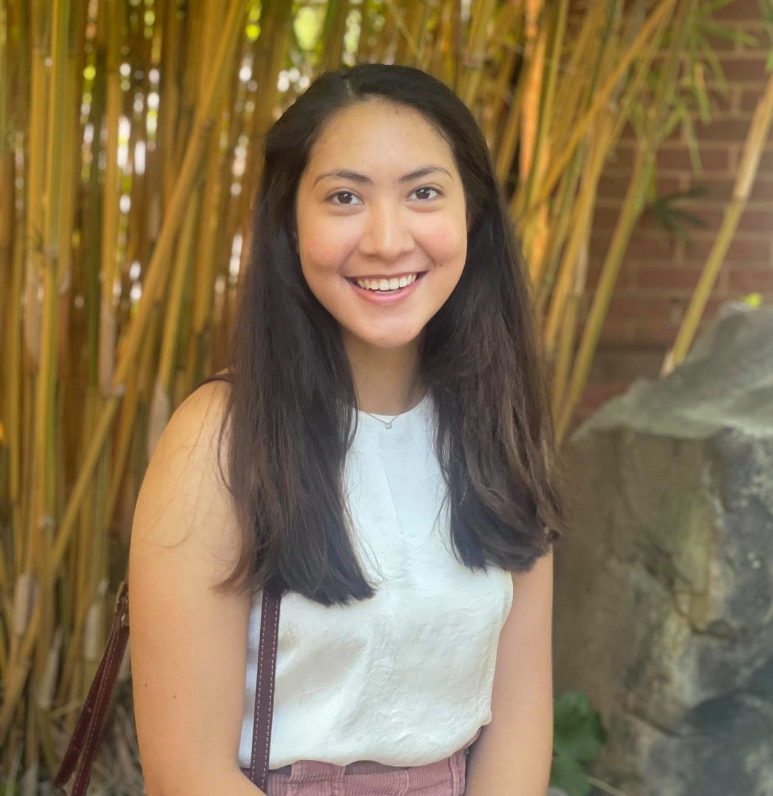
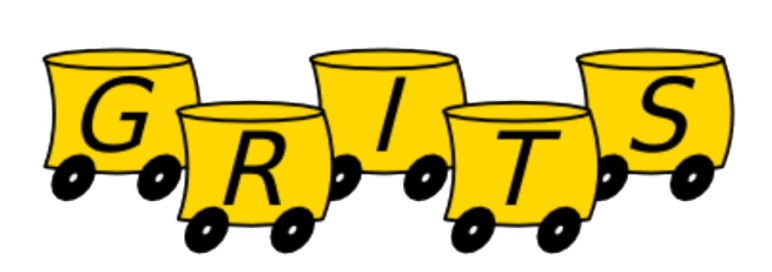
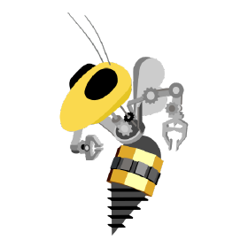

Stella Fournier
Electrical Engineer
stefour321@gatech.edu
(404) 402-0568
U.S Citizen
Education
Georgia Institute of Technology
August 2019 - May 2023 Expected 2023
Bachelor of Science, Department of Electrical Engineering
Research

Part-Time Internship at Georgia Tech Research Institute (GTRI)
May 2021 - August 2021
- Established and carried out experiments to study analog data regarding silicon properties of Xilinx Ultrascale FPGAs.
- Automated lab equipment, data collection, and visualization using Python, SciPy, and hd5py.
- Analyzed and visualized ring oscillator data to draw conclusions about aging and reliability of the Xilinx KU.
- Modified Microblaze block design that interfaces from SPI to I2C communivation on Xilinx Vivado Design Suite for heater control.
- Modified schematic and used ILA (Integrated Logic Analyzer) in Vivado, used Saleae Logic Analyzer, and wrote C code in Xilinx Vitis for hardware/firmware debugging I2C serial communication.
- Configured ZFS RAID on Ubuntu for reliable data storage. Familiar with partitioning and mirroring drives.
Undergraduate Research at Georgia Robotics and Intelligent System Laboratory (GRITS)
 President's Undergraduate Research Awards (PURA)
August 2020 - Present
- Led a team of engineering graduate students on multi-robot painting systems that laid colored trails as they moved through the concrete canvas where an external user influenced and controlled the colored patterns.
- Designed a PCB on EAGLE for a painting spraying system.
- Soldered the PCB using SMD soldering method.
- Debugged the PCB using digital multimeter.
- Excel in self-management and critical thinking skills as I independently learned how to design a PCB on EAGLE and combined necessary components, including a boost converter and level shifters for the spraying system.
- Developed professional communication skills as I communicated with Derivan, an Australian company, on their sponsor to provide solvent-based pigmented inks that prevent clogging in the atomizers.
- Soldered the PCB using SMD soldering method.
- Debugged the PCB using digital multimeter.
- Excel in self-management and critical thinking skills as I independently learned how to design a PCB on EAGLE and combined necessary components, including a boost converter and level shifters for the spraying system.
Undergraduate Research on Lithium-Ion Battery at Georgia Institute of Technology
December 2019 - May 2020
- Synthesized anode and cathode materials using solution and solid-state techniques.
- Characterized powder using X-ray diffraction (XRD), scanning electron microscopy (SEM), and solid-state nuclear magnetic resonance spectroscopy (SSNMR).
- Evaluated electrochemical behavior in coin cell/Swagelok cell configurations using rate-performance testing and galvanostatic intermittent titration technique (GITT).
Experience
Yellow Jackets Space Program (YJSP) - Avionics Team Member
September 2021 - Present
- Designed a PCB on Altium with sensors including IMUs, GPS, accelerometer, barometric pressure sensor, and magnetometer to provide the rocket's state information.

Robojackets RoboCup - Electrical Sub-Team Member
Autonomously-controlled and wirelessly-communicated robots that compete in the small size league (SSL).
September 2019 - March 2021
- Designed a proximity IR sensor PCB on EAGLE for soccer-playing robotic swarm.
- Tested PCBs using embedded systems and writing firmware that communicates via I2C interface for firmware debugging.
- Created documentation, presentations, and projects as training materials for new members.
- Presented electrical related materials and mentored members on new member projects and training labs.
Leadership
The Hive Makerspace at Georgia Institue of Technology
Largest interdisciplinary makerspace in the country catering specifically to electronics and computer engineering design and innovation.
January 2021 - Present
- Volunteered three hours per week to facilitate personal innovative projects by helping students operate the machines and equipment in PCB fabrication, embedded systems, electronics benchtop, 3D printing, laser cutting, and wood & metal working.